ImageJ Jython개발 환경을 설정하겠습니다.ImageJ에서는 통합개발환경(IDE)을 제공하지 않아 유사한 환경을 만들어줘야 합니다.
Reference
3.1. Image 불러오기
- 앞서 드린 설명에 따라
Boat.gif이미지를 띄웁니다.
3.2. ImageJ 개발창 띄우기
- 앞서 드린 설명을 따라 script 창을 띄웁니다.
New_.py라는 파일이 자동으로 생성되며, 저장되지 않았다는 뜻으로*이 파일 이름 앞에 붙어있습니다.- 본인이 작업할 위치에 가서 파일명을
01_imgfile_01.py라고 저장합시다.
3.3. ImageJ 개발환경 설정하기
python등의 프로그래밍 언어는 굉장히 많은 명령어와 변수를 다루어야 하기 때문에통합 개발 환경 (IDE: Integrated Development Environment)를 통한 명령어와 변수의 자동 완성 기능을 제공하고 있습니다.- 그러나
ImageJ에서 제공하는 개발환경은 이 점에서 매우 불편하기 때문에 다른 환경을 사용하고자 합니다.
3.3.1. Notepad++
Notepad++은 가벼우면서 강력한 범용 문서작업 SW입니다.- 컴퓨터에 부담을 최대한 주지 않는 개발환경 설정 방법입니다.
3.3.1.1. Notepad++ 설치
notepad++를 다운로드받아 설치합니다. 앞으로 개발은 여기에서 진행하겠습니다.npp.버전.installer.exe를 실행 후[다음]만 반복해서 설치하셔도 됩니다.- ※ 주의 ※* 사용자 정의 설치를 하는 것은 좋으나
Auto-completion Files는 선택을 유지하고 있어야 합니다.
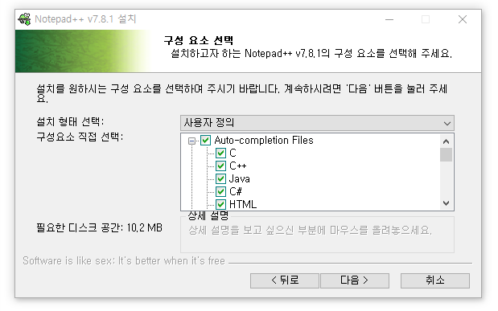
3.3.1.2. Notepad++ 코딩 테스트
위에서 저장한
01_imgfile_01.py를Notepad++에서 엽니다.언어를
Python으로 설정해줍니다.언어>P>Python을 체크해주세요.
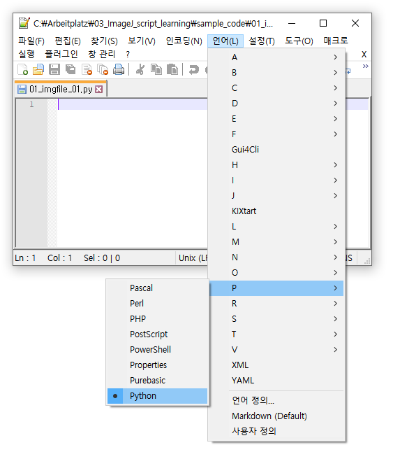i만 입력해도 pull-down 메뉴가 뜨면서
python에서 사용하는 i로 시작하는 명령어 등이 펼쳐집니다.이들 중 하나를 골라서 입력하셔도 좋고, 이걸 보고 오타를 줄이셔도 좋습니다.
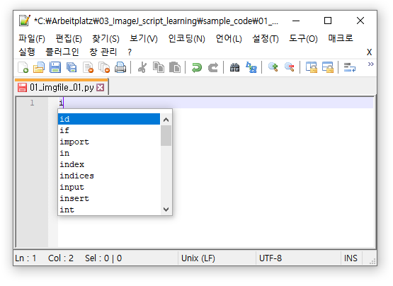간단하게 화면에 떠있는 이미지를 다른 이름으로 저장해보겠습니다.
지난 시간에 배운 것처럼 이미지를 메모리에 불러옵니다.
ImageJ에Boats.gif와 script 입력창이 떠있을 겁니다.notepad++에 다음과 같이 코드를 작성하고 script창에 붙여넣습니다.1
2
3
4
5
6
7
8from ij import IJ
imp = IJ.getImage()
print imp
from ij.io import FileSaver
fs = FileSaver(imp)
fs.save()[저장]을 눌러서 저장합시다.
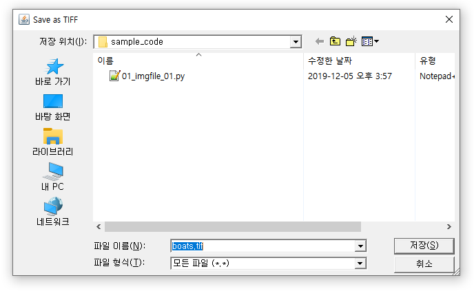
3.3.2. Python 설치 (Option)
ImageJ는 자체적으로Jython을 구동하기 때문에 추가적으로Python이나JAVA를 설치할 필요가 없습니다.- 그러나
Notepad++로 작성한 간단한Python코드를 실행하고자 하시거나, 이후 설명드릴 여러 강력한 IDE를 사용하고자 하신다면Python을 설치할 필요가 있습니다. Python을 공식 홈페이지에서 받는 것보다 환경설정이 용이한anaconda를 받으시는 것을 권장합니다. 수많은 부가 모듈 없이는 기능이 매우 약한데, 의존성 관리 등이 의외로 만만치 않기 때문입니다.- 우리는
Python실행파일만 필요하고, 필요시 환경을 관리해 줄conda만 있으면 되니 용량이 작은miniconda를 설치하겠습니다.
Reference
Anaconda
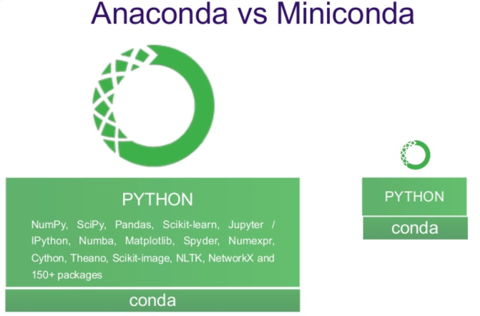
3.3.2.1. Miniconda 설치
MinicondaDownload 에서 본인에게 맞는 버전을 고릅니다.저는
Python 3.7 Miniconda3 Windows 64-bit를 택했습니다.
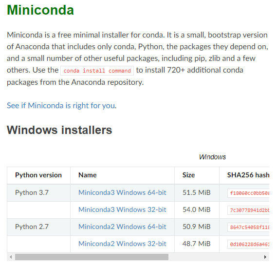다운받은 설치파일을 실행하고
Next를 눌러가며 진행합니다.
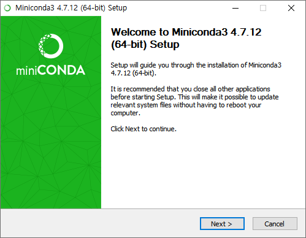※ 주의 ※ 설치 경로가 기본적으로
C:\ProgramData\Miniconda3으로 되어 있는데,ProgramData밖으로 빼줍니다.ProgramData가 숨김폴더라서 사용에 어려움을 겪을 수 있습니다.
저는C:\conda\로 지정했습니다.
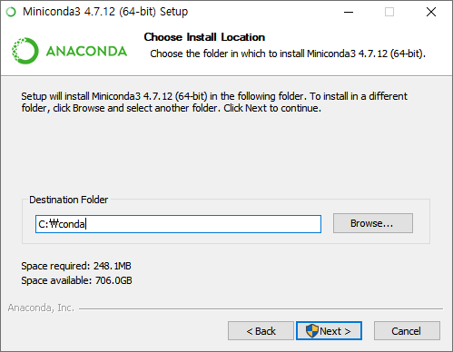Advanced Options에서는 둘 다 체크해줍니다.
설치중인Anaconda(Miniconda)를 기본 프로그램으로 하겠다는 설정으로 이해하시면 됩니다.Install을 누르면 설치가 시작됩니다.
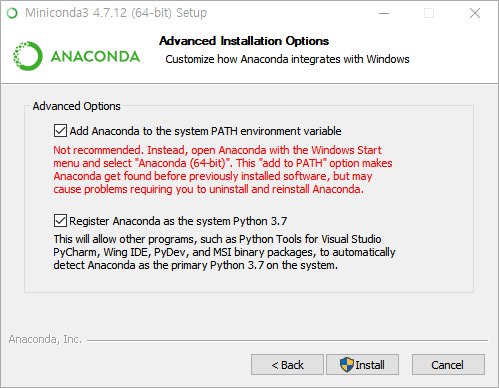명령 프롬프트를 실행해서python을 입력했을 때 아래처럼 나오면 성공적으로 설치된 것입니다.
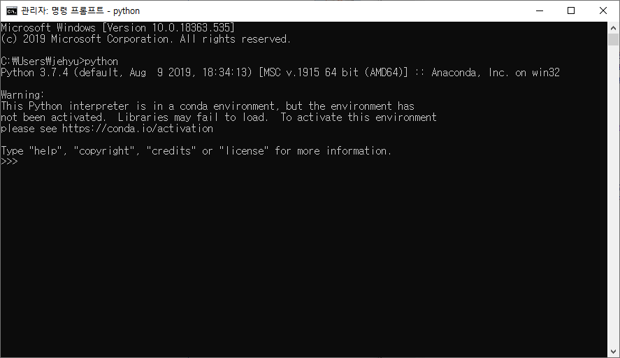
3.3.3. 기타 IDE 설치 (Option)
- 효율적인 프로그래밍을 위해 좋은 환경이 많이 출시되어 있습니다.
if-then과 같은 block을 보기 좋게 표시해주고, 명령어 종류에 따라 color code를 입혀 가시성을 높여줍니다.- 명령어 자동 완성, 괄호 자동 닫기 기능, 실시간 도움말 기능 등으로 편리한 코딩 환경을 제공합니다.
Python용 IDE로Anaconda에서 제공하는Spyder를 비롯해PyCharm,Eclipse,Visual Studio,Jupyter등이 있고, 특히Eclipse는jython개발 환경을 제공합니다.- 하지만 어차피
ImageJscript는ImageJ밖에서는 실행할 수 없기 때문에 기능적인 면보다 주관적인 편리함을 기준으로 선택하면 됩니다. - 저는
VScode를 사용하고 있습니다. - 색감과 기능이 좋고 실행이 무겁지 않아서 좋습니다.
- 그러나
ImageJ관련 라이브러리는 인식하지 못해 빨간 밑줄이 그려지는 것은 피할 수 없습니다.
그러려니 하면 됩니다.
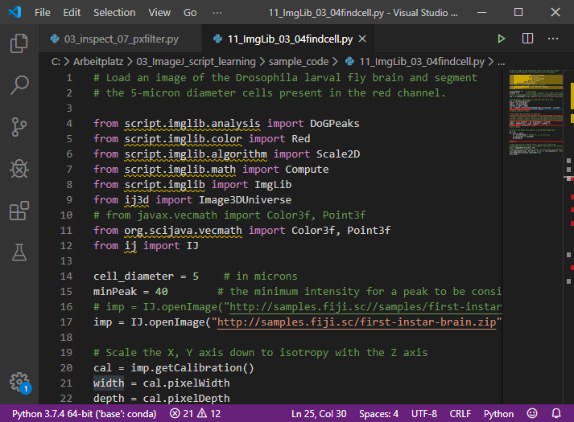